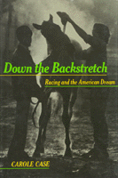

<body bgcolor="#FFFFFF" text="#000000" link="#0000FF" vlink="#CC0000" alink="#CC0000"><center><hr width="350" size="1" align="center" noshade>The culture of horseracing from behind the scenes<hr width="350" size="1" align="center" noshade><p><a href="https://cdcshoppingcart.uchicago.edu/Cart/ChicagoBook.aspx?ISBN=9780877228462&&PRESS=temple" target="_top">Buy this book!</a> | <a href="https://cdcshoppingcart.uchicago.edu/Cart/Cart.aspx?PRESS=temple" target="_top">View Cart</a> | <a href="https://cdcshoppingcart.uchicago.edu/Cart/Cart.aspx?PRESS=temple" target="_top">Check Out</a></p><p></p></center><!--none//--><h1>Down the Backstretch</h1>
<H2>Racing and the American Dream</H2>
<h3>Carole Case</h3>
<P>cloth 0-87722-846-9 $44.50, Aug 91, <FONT COLOR=#990033>Out of Stock Unavailable</FONT>
<BR> 224 pp
</P><p>Horseracing&#151the sport of kings&#151has fed imaginations for centuries. The romance of the striving horse, the dauntless rider, and the "pot of gold" at the finish has rendered the remote possibility of success as inconsequential. Carole Case joined the racetrack world, working as a groom and a walker, in order to understand the culture of horseracing from behind the scenes. The backstretch is an area not readily accessible to the average fan where trainers, grooms, jockeys, and other workers prepare the thoroughbred for a fleeting moment of success against great odds. The strenuous, sometimes dangerous, poorly paid, and lowly nature of that work seems to have little bearing on the dedication and enthusiasm of these workers. In <I>Down the Backstretch</I>, Case explores the motivation for such a career, its tenuous rewards, and its links to the American Dream.
<p>Case analyzes the culture that persists through its rituals, beliefs, and magical practices, all of which center around the thoroughbred horse. The community adheres through a shared sense of risk, ceremonial activities such as the paddock ritual, the racetrackers' argot, informal patterns of exchange, and a strange litany of proverbs, such as "Chickens today, feathers tomorrow." With fascinating detail, Case reveals the vivid contrast between the pomp and circumstance of the grandstand and the sweat and manure of the backstretch.
<BR>&nbsp;<h2>Excerpt</h2><P>Excerpt available at <a href="http://www.temple.edu/tempress">www.temple.edu/tempress</a></p>
<BR>&nbsp;<h2>Contents</h2><P>
<p>Preface and Acknowledgments
<br>1. Entrance to the Backstretch
<br>2. The Sport of Kings
<br>3. The People
<br>4. The Paddock Ritual
<br>5. "Chickens Today, Feathers Tomorrow"
<br>6. A Day at the Track
<br>7. Routine, Ritual, and Magic
<br>8. Disguise, Deceit, and Conspiracy
<br>9. Barbers, Butchers, and Gyps
<br>10. Racetrackers
<br>11. Life Stories
<br>12. The Dream
<br>Glossary
<br>References
<br>Index
</P><BR>&nbsp;<H2>About the Author(s)</H2>
<P><b>Carole Case</b> is Assistant Professor of Criminal Justice at the University of Nevada, Las Vegas and a Research Associate at the Tufts University Center for Animals and Public Policy.</P>
<BR><H2>Subject Categories</H2>
<p><A HREF="/tempress/sociology.html" TARGET="_top">Sociology</a>
<BR><A HREF="/tempress/general.html" TARGET="_top">General Interest</a>
</p>
<BR><h2 class="inpageheading">In the series</H2>
<P><I><a href="http://www.temple.edu/tempress/labor_change.html" onMouseOver="window.status='Click for other books in this series!'; return true;" onMouseOut="window.status=''; return true;" target="_top">Labor and Social Change</a></i>, edited by Paula Rayman and Carmen Sirianni.
</p><p><i>Labor and Social Change</i>, edited by Paula Rayman and Carmen Sirianni, includes books on workplace issues like worker participation, quality of work life, shorter hours, technological change, and productivity, as well as union and community organizing and ethnographies of particular occupations.</p>
<p align="center"><a href="https://cdcshoppingcart.uchicago.edu/Cart/ChicagoBook.aspx?ISBN=9780877228462&&PRESS=temple" target="_top">Buy this book!</a> | <a href="https://cdcshoppingcart.uchicago.edu/Cart/Cart.aspx?PRESS=temple" target="_top">View Cart</a> | <a href="https://cdcshoppingcart.uchicago.edu/Cart/Cart.aspx?PRESS=temple" target="_top">Check Out</a></p><p><font face="Arial" size="1"><a href="copyright.html" onMouseOver="window.status='Web Copyright Policy';return true;" onMouseOut="window.status=''" title="Web Copyright Policy">&copy;</a> 2015 <a href="http://www.temple.edu" target="new" onMouseOver="window.status='Link to Temple University home page';return true;" onMouseOut="window.status=''" title="Link to Temple University home page">Temple University</a>. All Rights Reserved. http://www.temple.edu/tempress/titles/838_reg.html</font></p>